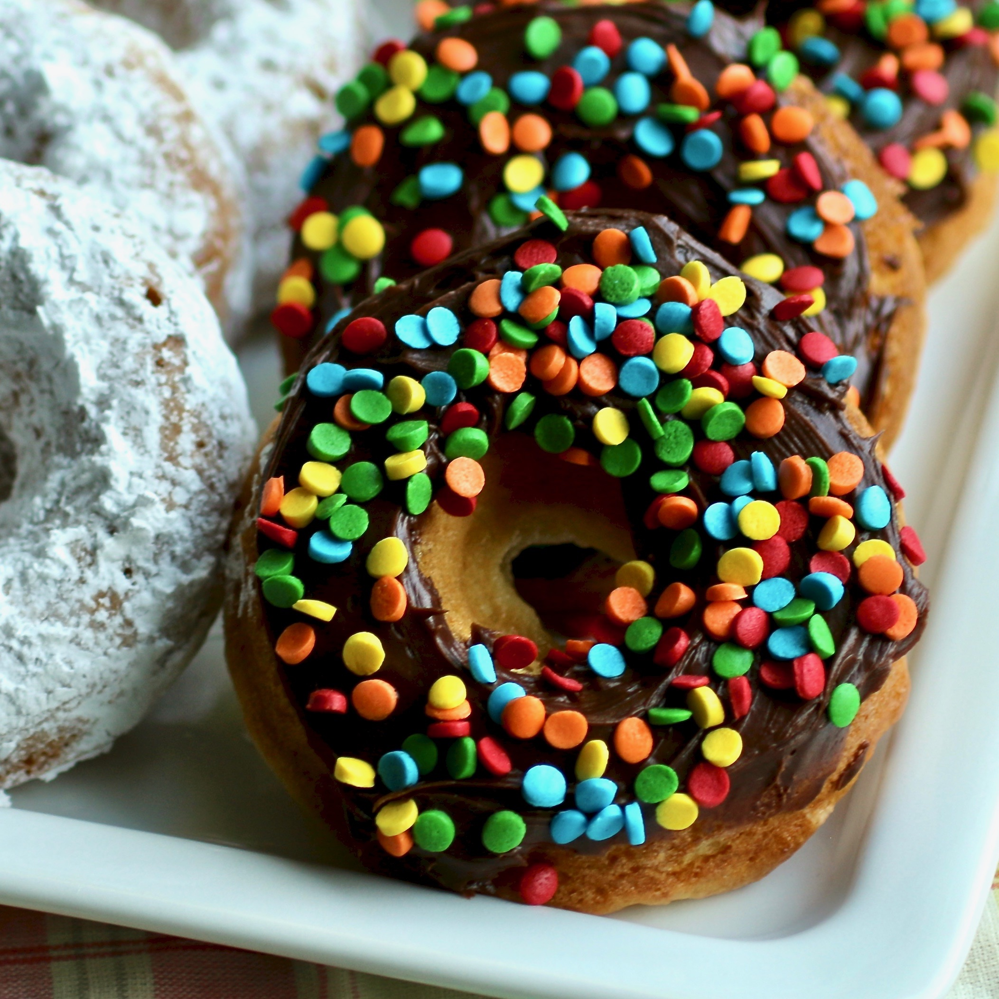

Donut

Description
Finally a recipe for a baked buttermilk doughnut that is crispy on the outside and light and airy on the inside! You won't think you're eating a donut-shaped muffin with this one! You could also toss the donuts in a cinnamon-sugar mix, glaze them with a powdered sugar-water icing, or frost them with chocolate frosting.
Ingredients
- 2 cups all-purpose flour
- 1 cup white sugar
- 2 tablespoons cornstarch
- 1 teaspoon baking powder
- 1 teaspoon freshly grated nutmeg
- ½ teaspoon salt
- 1 cup buttermilk
- 1 teaspoon baking soda
- 1 teaspoon vanilla extract
- 4 tablespoons vegetable shortening, melted and cooled slightly
- 1 cup sifted powdered sugar
Steps
- Preheat the oven to 375 degrees F (190 degrees C). Adjust an oven rack to upper-middle position. Spray a donut pan with cooking spray.
- Sift flour, sugar, cornstarch, baking powder, nutmeg, and salt together in a large mixing bowl.
- Whisk buttermilk, baking soda, and vanilla extract together in a smaller bowl.
- Pour melted and cooled shortening into flour mixture and stir until absorbed. Add buttermilk mixture and mix well. Let batter rest for 10 to 15 minutes.
- Pour a scant tablespoon of batter into the well of each donut cup in the prepared pan. Use the back of a spoon to distribute batter evenly across the bottom of each.
- Bake in the preheated oven on the upper-middle rack until golden brown, 12 to 15 minutes. Remove from the oven; let cool in the pan for 2 to 3 minutes before removing onto a wire rack.
- Place powdered sugar into a small paper bag. Toss warm doughnuts in powdered sugar to coat.
- Spray the donut pan with cooking spray again. Spoon batter in tablespoonfuls into the hot pan for the next batch.
- Bake donuts in the preheated oven on the upper-middle rack until golden brown, 12 to 15 minutes. Let cool for 2 to 3 minutes before removing from the pan and toss in powdered sugar.